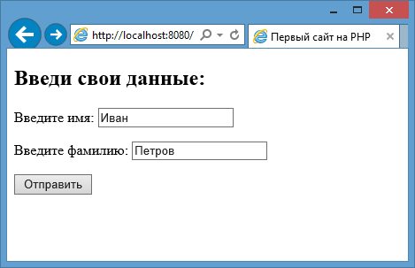
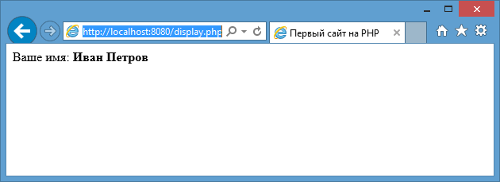

Первый сайт на PHP
Сейчас мы создадим небольшой сайтик, который призван дать начальное понимание работы с PHP.
Для создания программ на PHP нам потребуется текстовый редактор. Наиболее популярным на сегодняшний день является программа Notepad++
Перейдем к ранее созданному каталогу C:\localhost, который будет хранить все документы сайта. Создадим текстовый файл и назовем его index.html. Откроем его в текстовом редакторе и добавим в него следующий код:
<!DOCTYPE html> <html> <head> <title>Первый сайт на PHP</title> <meta charset="utf-8"> </head> <body> <h2>Введи свои данные:</h2> <form action="display.php" method="POST"> <p>Введите имя: <input type="text" name="firstname" /></p> <p>Введите фамилию: <input type="text" name="lastname" /></p> <input type="submit" value="Отправить"> </form> </body> </html>
Код html содержит форму с двумя текстовыми полями. При нажатии на кнопку данные этой формы отсылаются скрипту display.php,
так как он указан в атрибуте action.
Теперь создадим этот скрипт, который будет обрабатывать данные. Добавим в папку C:\localhost новый текстовый файл. Переименуем его в display.php. По умолчанию файлы программ на php имеют расширение .php. Итак, добавим в файл display.php следующий код:
<!DOCTYPE html> <html> <head> <title>Первый сайт на PHP</title> <meta charset="utf-8"> </head> <body> <?php $name = $_POST["firstname"]; $surname = $_POST["lastname"]; echo "Ваше имя: <b>".$name . " " . $surname . "</b>"; ?> </body> </html>
Здесь уже в разметке html идут вкрапления кода PHP. Для добавления выражений PHP на страницу используются теги <?php ..... ?>, между
которыми идут инструкции на языке PHP. В коде php мы получаем данные формы и выводим их на страницу.
Каждое отдельное выражение PHP должно завершаться точкой с запятой. В данном случае у нас три выражения. Два из них получают переданные данные формы,
например, $name = $_POST["firstname"];.
$name - это переменная, которая будет хранить некоторое значение. Все переменные в PHP предваряются знаком $. И так как форма на странице index.html
использует для отправки метод POST, то с помощью выражения $_POST["firstname"] мы можем получить значение, которое было введено в текстовое поле
с атрибутом name="firstname". И это значение попадает в переменную $name.
С помощью оператора echo можно вывести на страницу любое значение или текст, которые идут после оператора. В данном случае (echo "Ваше имя: <b>".$name . " " . $surname . "</b>")
с помощью знака точки текст в кавычках соединяется со значениями переменных $name и $surname и выводится на страницу.
Теперь обратимся к форме ввода, перейдя по адресу http://localhost:8080:
Первый сайт на PHP
Введем какие-нибудь данные и нажмем на кнопку отправить:
Отправка данных в PHP
Итак, у нас сработал скрипт display.php, который получил и вывел отправленные данные на страницу.